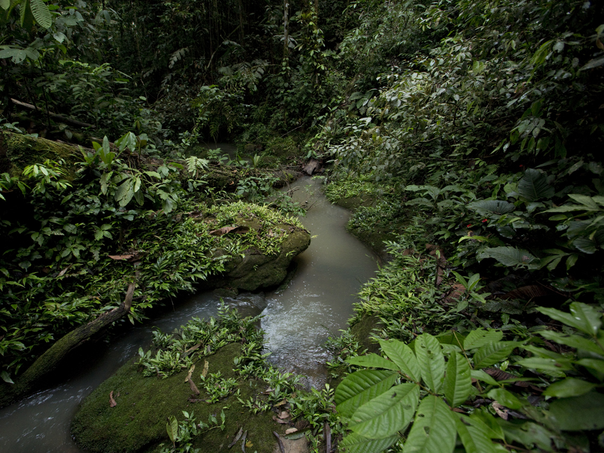

Length and Location: The Amazon River is approximately 4,345 miles (7,062 kilometers) long, primarily flowing through Brazil but also passing through Peru, Colombia, and several other South American countries.
Drainage Basin: The Amazon Basin covers about 40% of South America and includes over 1,100 tributaries, making it the largest river system in the world by discharge volume.
Hydrology and Ecosystems
Seasonal Flooding: The river experiences significant seasonal flooding from December to May, enriching the surrounding soil and creating a unique ecosystem.
Biodiversity: The Amazon Rainforest, surrounding the river, hosts around 40,000 plant species, 1,300 bird species, and countless mammals, reptiles, and amphibians, many of which are endemic to the region.
Cultural Significance
Indigenous Communities: Numerous Indigenous groups, such as the Yanomami and the Kayapo, rely on the river for sustenance, transportation, and cultural practices.
Traditional Knowledge: These communities possess extensive knowledge of the river's ecosystems, contributing to sustainable practices that have been passed down through generations.
Threats to Culture: External pressures, including deforestation and industrialization, threaten the cultural heritage and livelihoods of these Indigenous peoples.
Environmental Challenges
Deforestation: Driven largely by agriculture and logging, deforestation poses a significant threat to the Amazon Rainforest and the river’s ecosystem.
Climate Change: The loss of trees disrupts the carbon cycle, exacerbating climate change and threatening global environmental health.
Pollution: Mining activities introduce toxic substances into the river, endangering aquatic life and contaminating drinking water sources.
Biodiversity Loss: Overfishing and the introduction of invasive species further threaten the delicate balance of the river’s ecosystems.
Economic Importance
Transportation Route: The Amazon River serves as a critical transportation corridor, facilitating trade and movement in a region with limited infrastructure.
Fishing and Agriculture: The river is vital for local fisheries, providing food and income for millions, while agriculture around its basin supports both local and global markets.
Tourism: Ecotourism in the Amazon region has gained popularity, drawing visitors interested in its unique wildlife and ecosystems, providing additional economic benefits.
Sustainable Development and Conservation
Need for Sustainable Practices: The push for economic development often conflicts with environmental conservation, highlighting the necessity for sustainable management strategies.
Conservation Initiatives: Numerous organizations and governments are working to protect the Amazon through reforestation, protected areas, and Indigenous land rights.
Community Involvement: Engaging local communities in conservation efforts ensures that sustainable practices are culturally appropriate and economically viable.

Global Importance
Carbon Sink: The Amazon Rainforest plays a crucial role in regulating the Earth’s climate by absorbing carbon dioxide, highlighting its significance in global climate change mitigation.
Biodiversity Hotspot: The Amazon is recognized as one of the most biodiverse regions on the planet, making it essential for global ecological health and scientific research.
Cultural Heritage: Beyond its ecological significance, the river and its surrounding rainforest are rich in cultural heritage, representing a treasure trove of knowledge, traditions, and histories.
Conclusion
Interconnectedness of Nature and Society: The Amazon River exemplifies the intricate relationship between natural systems and human activities. Its health is vital not only for the people of South America but for the global community as well.
Call to Action: Protecting the Amazon requires collective efforts to promote sustainable practices, respect Indigenous rights, and implement conservation strategies that ensure the river remains a vital resource for future generations.
Vision for the Future: A balanced approach to development and conservation can secure the Amazon River’s role as a lifeblood for the rainforest, preserving its ecological and cultural richness for generations to come.
 The Amazon River: The Lifeblood of the Rainforest
The Amazon River: The Lifeblood of the Rainforest